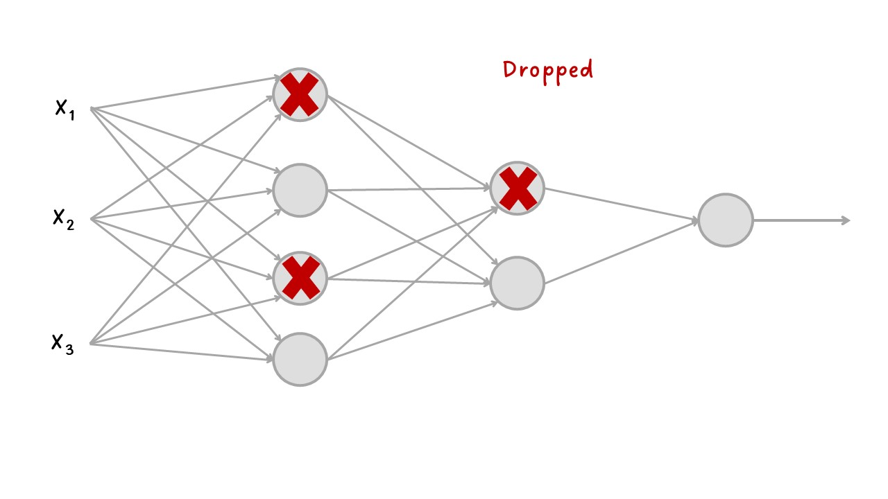

Regularización¶
Un modelo ideal es aquel que se encuentra justo en el límite entre la insuficiencia y la sobre capacidad, pero para saber dónde se encuentra este punto, primero se debe cruzar, es decir, se necesita desarrollar un modelo que se ajuste demasiado.
Cuando el modelo tiene un bajo error en el conjunto de train, pero el rendimiento en el conjunto de validación (o de test) comienza a degradarse, se ha logrado el sobreajuste (overfitting).
Una vez se haya alcanzado el poder estadístico y se pueda sobreajustar, el siguiente objetivo es maximizar el rendimiento de la generalización. En esta fase se modificará el modelo, se vuelve a entrenar y se evalúa con los datos de validación (o de test en algunos casos), se modificará nuevamente y se repetirá el proceso hasta que el modelo sea tan bueno como sea posible.
En caso de tener tres conjuntos de datos, train, validation y test, este proceso no se aplica a los datos de test.
Algunas cosas que se pueden hacer son las siguientes:
Probar con diferentes arquitecturas, añadir o quitar capas.
Probar diferentes hiperparámetros como el número de neuronas por capa, tasa de aprendizaje, optimizador, etc. con el fin de encontrar la configuración óptima.
Regularización de pesos como L1 o L2.
Añadir Dropout.
Las técnicas de regularización son un conjunto de mejores prácticas que impiden activamente la capacidad del modelo para ajustarse perfectamente a los datos de train, con el objetivo de hacer que el modelo funcione mejor durante el conjunto de validation (o de test), es decir, en la validación.
Regularizar el modelo significa hacer que el modelo sea más simple, más “regular”, que sea menos específico para el conjunto de train y más capaz de generalizar.
Algunas técnicas para regularizar el modelo son las siguientes:
Reducción del tamaño de la red:¶
Un modelo demasiado pequeño no se ajustará demasiado, así que la manera más sencilla de mitigar el overfitting es reducir el tamaño del modelo, reducir la cantidad de capas y la cantidad de neuronas por capa. Al mismo tiempo tener en cuenta modelos que tengan suficientes parámetros para que no se ajusten mal.
No existe un método para determinar la cantidad óptima de capas o de neuronas, por lo que se debe evaluar una variedad de arquitecturas diferentes para encontrar el tamaño correcto del modelo para los datos.
Lo ideal es comenzar con pocas capas y neuronas y aumentar el tamaño hasta que vea rendimientos decrecientes con respecto a la pérdida de validación.
Sabrá que su modelo es demasiado grande si comienza a sobreajustarse de inmediato y si su curva de pérdida de validación se ve entrecortada con una varianza alta (aunque las métricas de validación entrecortadas también podrían ser un síntoma del uso de un proceso de validación poco confiable, como una división de validación que es demasiado pequeña).
Cuanta más capacidad tiene el modelo, más rápidamente puede modelar los datos de entrenamiento (lo que da como resultado una baja pérdida de entrenamiento), pero más susceptible es al sobreajuste (lo que da como resultado una gran diferencia entre la pérdida de entrenamiento y la de validación).
Regularización de peso:¶
Una forma de mitigar el sobreajuste es imponer restricciones a la complejidad del modelo al obligar a los pesos (W) a tomar solo valores pequeños, lo que hace que la distribución de los valores de peso sea más regular.
Esta regularización de peso se hace agregando a la función de pérdida del modelo un costo asociado con tener pesos grandes. Se tienen dos métodos:
Regularización L1: el costo agregado es proporcional al valor absoluto de los coeficientes de ponderación (la norma L1 de los pesos).
Regularización L2: el costo agregado es proporcional al cuadrado del valor de los coeficientes de ponderación (la norma L2 de los pesos).
Regularización L1:
También llamada regularización Lasso (Least Absolute Shrinkage and Selection Operator Regression), agrega un término de regularización a la función de costo:
Una característica importante de Lasso es que tiende a eliminar los pesos de las variables menos importantes (es decir, establecerlas en cero). En otras palabras, Lasso realiza automáticamente la selección de variables y genera un modelo disperso (es decir, con pocos pesos de variables distintos de cero).
Esta regularización se agrega en la capa Dense() con el argumento
kernel_regularizer= en la red neuronal creada en Keras
aquí. Por
defecto \(\lambda = 0.01\).
kernel_regularizer=keras.regularizers.L1(l1=0.01)
Como alternativa, se puede usar el siguiente código para agregar la regularización L1 utilizando el valor de \(\lambda\) por defecto.
kernel_regularizer='l1'
Regularización L2:
También llamada regularización Rigde, agrega un término de regularización a la función de costo:
Esta regularización se agrega en la capa Dense() con el argumento
kernel_regularizer= en la red neuronal creada en Keras
aquí. Por
defecto \(\lambda = 0.01\).
kernel_regularizer=keras.regularizers.L2(l2=0.01)
Como alternativa, se puede usar el siguiente código para agregar la regularización L2 utilizando el valor de \(\lambda\) por defecto.
kernel_regularizer='l2'
Tenga en cuenta que la regularización del peso se usa más típicamente para modelos de aprendizaje profundo más pequeños. Los grandes modelos de aprendizaje profundo tienden a estar tan parametrizados que imponer restricciones en los valores de peso no tiene mucho impacto en la capacidad y la generalización del modelo. En estos casos, se prefiere una técnica de regularización diferente: Dropout.
Añadir Dropout:¶
El Dropout es una técnica de regularización que consiste en eliminar aleatoriamente una serie de salidas de la capa durante el entrenamiento, es decir, estable en cero ciertas neuronas de forma aleatoria. La tasa Dropout (o tasa de abandono) es la proporción de neuronas que se ponen en cero.
En la validación no se aplica Dropout, en cambio, los valores de salida de la capa se reducen por un factor igual a la tasa de abandono, para equilibrar el hecho de que hay más neuronas activas que en el entrenamiento.
Es un algoritmo es bastante simple: en cada paso de entrenamiento, cada neurona (incluidas las neuronas de entrada, pero siempre excluyendo las neuronas de salida) tiene una probabilidad \(p\) de ser “abandonada” temporalmente, lo que significa que será ignorada por completo durante este paso de entrenamiento, pero puede estar activa durante el próximo paso.
El hiperparámetro \(p\) se denomina tasa de abandono y, por lo general, se establece entre el 10% y el 50%: más cerca del 20% al 30% en redes neuronales recurrentes y más cercano al 40 % a 50 % en redes neuronales convolucionales.
Al eliminar aleatoriamente un subconjunto diferente de neuronas se reduce el sobreajuste. La introducción de ruido a los valores de salida de una capa puede romper patrones casuales que no son significativos.
Otra forma de comprender el poder del Dropout es darse cuenta de que se genera una red neuronal única en cada paso de entrenamiento. Dado que cada neurona puede estar presente o no, hay un total de 2 redes posibles (donde \(N\) es el número total de neuronas descartables). Este es un número tan grande que es prácticamente imposible que la misma red neuronal se muestree dos veces. Una vez que haya ejecutado 10.000 pasos de entrenamiento, esencialmente habrá entrenado 10.000 redes neuronales diferentes (cada una con solo una instancia de entrenamiento). Estas redes neuronales obviamente no son independientes porque comparten muchos de sus pesos, pero sin embargo son todas diferentes. La red neuronal resultante puede verse como un conjunto promedio de todas estas redes neuronales más pequeñas.

Dropout¶
En Keras
aquí,
puede introducir el Dropout en un modelo a través de la capa
Dropout(), que se aplica justo después de la salida de la capa.
keras.layers.Dropout(rate=0.2)
Si observa que el modelo se está sobreajustando, puede aumentar la tasa de abandono. Por el contrario, debe intentar disminuir la tasa de abandono si el modelo no se ajusta al conjunto de entrenamiento. También puede ayudar a aumentar la tasa de abandono para las capas grandes y reducirla para las pequeñas. Además, muchas arquitecturas de última generación solo usan el Dropout después de la última capa oculta, por lo que es posible que desee probar esto si el abandono total es demasiado fuerte.
Early stopping:¶
Encontrar el punto exacto durante el entrenamiento en el que ha alcanzado el ajuste más generalizable (el límite exacto entre una curva de ajuste insuficiente y una curva de ajuste excesivo) es una de las cosas más efectivas que puede hacer para mejorar la generalización.
La detención anticipada (Early stopping) interrumpe del entrenamiento cuando la pérdida de validación ya no mejora (y, por supuesto, guardar el mejor modelo obtenido durante el entrenamiento).
Cuando se está entrenado a un modelo no se puede saber cuántos epochs se necesitarán para llegar a una pérdida de validación óptima. Hasta ahora el procedimiento ha sido entrenar durante suficientes epochs para comenzar a sobreajustar y determinar la cantidad adecuada de epochs para luego volver a ejecutar el entrenamiento desde cero utilizando este número óptimo. Este enfoque es un desperdicio.
Una mejor manera de detener el entrenamiento cuando mida que la pérdida
de validación no mejora. Esto se puede lograr utilizando el callback
EarlyStopping que interrumpe el entrenamiento una vez que una
métrica objetivo que se está monitoreando ha dejado de mejorar durante
un número fijo de épocas.
Por ejemplo, esta callback le permite interrumpir el entrenamiento tan pronto como comience a sobreajustar, evitando así tener que volver a entrenar su modelo por un número menor de épocas.
EarlyStopping para clasificación:
Se puede monitoriar la evolución de loss o val_loss. Si en
compile() se agregan metrics= también se pueden monitorear.
Para monitorear val_accuracy, primero se agrega en
compile(..., metrics = ["accuracy"], ...).
Puede agregar el argumento restore_best_weights=True para que
restaure los pesos del modelo desde el epoch con el mejor valor de la
cantidad a monitorear. Por defecto es False, con lo que utiliza los
pesos del modelo obtenidos en el último step de entrenamiento.
callbacks= keras.callbacks.EarlyStopping( # Interrumpe el entrenamiento cuando se detiene la mejora.
monitor="val_accuracy", # Supervisa el accuracy en la validación del modelo.
patience=2, # Interrumpe el entrenamiento cuando la precisión ha dejado de mejorar durante dos epochs.
restore_best_weights=True) # pesos del mejor modelo.
Simplemente se puede monitorear val_loss así:
callbacks= keras.callbacks.EarlyStopping( # Interrumpe el entrenamiento cuando se detiene la mejora.
monitor="val_loss", # Supervisa la loss en la validación del modelo.
patience=2, # Interrumpe el entrenamiento cuando la precisión ha dejado de mejorar durante cinco epochs.
restore_best_weights=True) # pesos del mejor modelo.
EarlyStopping para regresión:
En regresión podemos tener la costumbre de no tener métricas
adicionales, se define en loss la métrica del mse. Podemos
monitorear esta métrica de la siguiente manera:
callbacks= keras.callbacks.EarlyStopping( # Interrumpe el entrenamiento cuando se detiene la mejora.
monitor="val_loss", # Supervisa la loss en la validación del modelo.
patience=2, # Interrumpe el entrenamiento cuando la precisión ha dejado de mejorar durante cinco epochs.
restore_best_weights=True) # pesos del mejor modelo.
Las callbacks se pasan al modelo a través del argumento de callbacks
en fit(), que toma una lista de callbacks. Puede pasar cualquier
número de callbacks.
model.fit(..., callbacks=callbacks, ...)
Tenga en cuenta que debido a que callback monitoreará la pérdida de
validación y la precisión de la validación, debe pasar
validation_data a callbacks para fit().